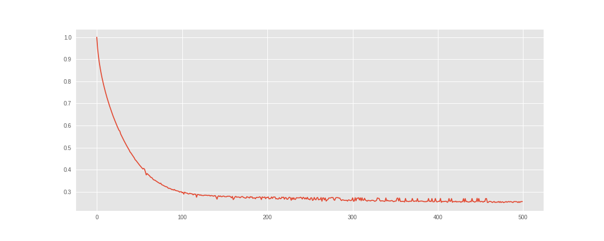
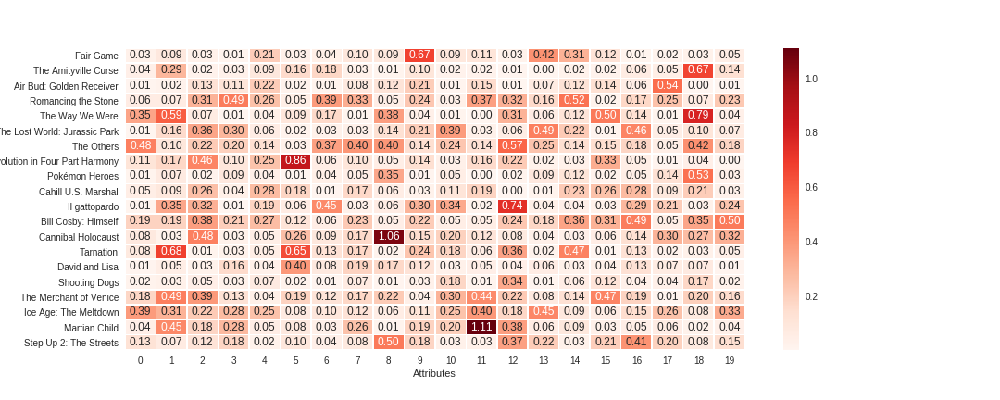
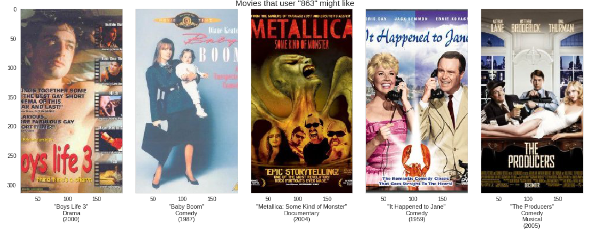
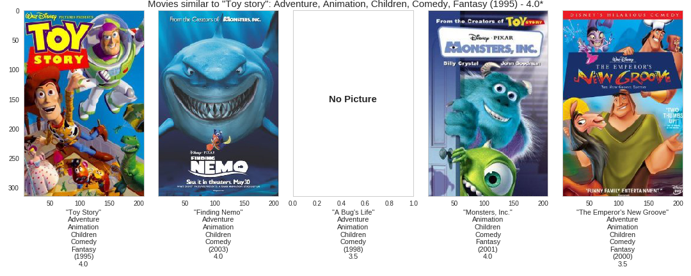

In this article, we will explore an implementation on the Hierarchical Factorization (HPF) model in Edward. This implementation will use the movilens 2k dataset to learn latent features that try to capture the preferences and attributes of users and movies respectively. The code is avalaible on github.
Recommender systems
I'm not going to talk about recommender systems (recsys) here. For an overview of recsys and matrix factorization techniques, see [1]. Here, I will discuss the Hierarchical Poisson Factorization as presented in this paper [2].
Hierachical Poisson Factorization
The HPF model was developed by David Blei and Prem Gopelen and it's one of the simplest matrix factorization technique. The model assumes that each cell of the observed behavior matrix is drawn from a Poisson distribution whose parameter is a linear combination of the corresponding user preferences and movie attributes. This model have shown to have many desirable properties.
The genrative process of the HPF as describe in the original paper is as follow:
-
For each user \(u\):
- Sample activity \(\xi_u \sim Gamma(a',a'/b')\).
- For each component \(k\), sample preference \(\theta_{uk} \sim Gamma(a,\xi_u)\).
-
For each movie \(v\):
- Sample activity \(\eta_v \sim Gamma(c',c'/d')\).
- For each component \(k\), sample attribute \(\beta_{vk} \sim Gamma(c,\eta_v)\).
-
For each user \(u\) and movie \(v\), sample rating \(r_{uv} \sim Poisson(\theta_u^T\beta_v)\).
The posterior of the user activity matrix \(\mathbf{\theta_u}\) and movie preference matrix \(\mathbf{\beta_v}\) is computed via variatonal inference [3].
Dataset
The data used in this post is the movielens 2k dataset, published by GroupLeans research group which was released in the framework of the 2nd International Workshop on Information Heterogeneity and Fusion in Recommender Systems (HetRec 2011) and at the 5th ACM Conference on Recommender Systems (RecSys 2011).
Probabilistic programming
We will build that model in Edward [4], a "Turing-complete probabilistic programming language". To build a probabilistic model in Edward, all you need to do is to specify the set of random variables of your model, instanciate your inference algorithm, and press run. For the model described above, it looks something like the code below. The Jupyter notebooks of this article is avaible on github.
import edward as ed import tensorflow as tf from edward.models import Poisson, Gamma from edward.models import PointMass, Empirical ed.set_seed(42)
Model
We specify our model.
k = 20 # Number of components n_iter = 500 t = 500 act = Gamma(1.0, 1.0, sample_shape=n) # Users activity pref = Gamma(1.0, act, sample_shape=k) # Users preference pop = Gamma(0.1, 0.1, sample_shape=m) # Items popularity attr = Gamma(1.0, pop, sample_shape=k) # Items attribute like = Poisson(tf.gather_nd(tf.matmul(pref, attr, transpose_a=True), tidx)) qact = Empirical( tf.nn.softplus(tf.Variable(tf.random_normal([t,n]))), ) qpref = PointMass( tf.nn.softplus(tf.Variable(tf.random_normal([k,n]))), ) qpop = Empirical( tf.nn.softplus(tf.Variable(tf.random_normal([t,m]))), ) qattr = PointMass( tf.nn.softplus(tf.Variable(tf.random_normal([k,m]))), )
Inference
Thanks to Edward compositionalability of inference, we can compose different inference algorithms for the same model. Here, we will make inference using Monte Carlo EM (Expectation Maximazation), with Gibbs sampling for the E-step over the user activity and movie popularity and MAP for the M-step over the user preference and movie attribute.
inference_e = ed.Gibbs( {act:qact, pop:qpop}, data={like:y, pref:qpref, attr:qattr}, ) inference_m = ed.MAP( {pref:qpref, attr:qattr}, data={like:y, act:qact, pop:qpop}, ) inference_e.initialize() inference_m.initialize(n_iter=n_iter, optimizer="rmsprop") tf.global_variables_initializer().run()
Once set up, we can now run the model.
loss = np.empty(n_iter, dtype=np.float32) for i in range(n_iter): info_dict_e = inference_e.update() info_dict_m = inference_m.update() loss[i] = info_dict_m["loss"] inference_m.print_progress(info_dict_m)
We inspect the losses to see how how model have done.
fig = plt.figure(figsize=(8,6)) ax = fig.add_subplot(111) ax.plot(loss / loss.max()) ax.set_title("Loss") ax.set_xlabel("Iteration")
It seems like the model have converged. So, we can save our posteriors for latter use in the recommendation process.
sess = ed.get_session() pref = sess.run(qpref) # Infered user preference. attr = sess.run(qattr) # Infered movie attribute.
Results
We've implemented the HPF to infer the latent user prefrerence and movie attribute.
We can then use them to make recommendation. Here, the meta dataframe
contains basic information about each movie in the form:
meta.head()
| title | imdbPictureURL | year | genre | |
|---|---|---|---|---|
| movieID | ||||
| 0 | Toy story | http://ia.media-imdb.com/images/... | 1995 | Adventure, Animation, Children, Comedy, Fantasy |
| 1 | Jumanji | http://ia.media-imdb.com/images/... | 1995 | Adventure, Children, Fantasy |
| 2 | Grumpy Old Men | http://ia.media-imdb.com/images/... | 1993 | Comedy, Romance |
| 3 | Waiting to Exhale | http://ia.media-imdb.com/images/... | 1995 | Comedy, Drama, Romance |
| 4 | Father of the Bride Part II | http://ia.media-imdb.com/images/... | 1995 | Comedy |
The rating matrix contains the actual ratings of users.
Heatmap
It's not easy to visualize a multi-dimensional data. One way around this is the heatmap.
We plot the heatmap of movies attribute (see the code of the heatmap function
in the repository).
heatmap(attr, meta)
As we can see, for each movie, most values are really small. The higher values may capture the salient features of that movie (even though we don't know for sure what these features might be).
Multi dimentional scaling
With the plot, above, it's hard to tell which movies are closer or far away. For that, we can plot movies (some of them) with two selected components on the x axis and y axis.
mds(attr, meta)
We can do this in tree dimensions (with tree selected components). We see on the plot that some movies are grouped together. Note that, this is just 20 data points (movies). Also, the movies closer together in these dimensions may be father apart in other dimensions.
Recommendation
Before recommending a movie to a user, let's see some of the movies rated by that user.
uid = np.random.randint(n) # Choose the user rated_by(uid, meta, rating)
Now, let's see what the system "thinks" might interest that user.
recommend_to(uid, pref, attr, meta, rating)
The recommendation is done on movies not rated by the user (we assume that the rating is not available because the user haven't watched (or encountered) the movies yet). I'm not really a movie expert, so I will rely on your comments to discuss the outcome of this recommendation. The movies shown in the "rated by" plot is just a subset of movies rated by that user and they are selected at random.
One of the other feature of a recommendation system besides its use in recommendation,
is its use for suggestion of movies similar to a selected one. In the similar_to
function, we compute the similarity with one of the simplest distance metric,
the euclidean distance. For
reminder, the euclidean distance of two vectors \(u\) and \(v\) is the quantity:
\begin{equation*} d(u, v) = ||u - v||_2 \end{equation*}
Lower the distance, closer are the two vectors. For the similarity suggestion,
we can choose a well known movie. Well, I choose Toy Story (choose your own). It's the
first movie in the data set. See the entries of the meta dataframe in the
beginning of the section. The ID of Toy Stoy is 0 (it's arbitrary).
Let's see what the system "thinks" is "similar" to Toy Story.
similar_to(0, attr, meta, rating) # SImilar to Toy Story
I've wathed two of the movies suggested here (Finding Nemo, Monsters, Inc.) including Toy Stoy itself. So, I'm in the position to say that these movies share some features together. The ratings shown below the movie's title or after the movie's title (in the figure title) is the median rating for that movie.
After ploting this, it occurs to me that Toy Story is in the suggestion despites the fact that in the implementation, I explicit discard the movie istself (since a movie is always similar to itself). Below is the part of the code that performs the calculation (see the full code on github).
dist = np.apply_along_axis(norm, 1, attr[:, mid] - attr.T) # Euclidean distance: lower is closer. ids = np.argsort(dist)[1:n+1] # Discard the movie itself
That result makes me think that may be Toy Story is duplicated in the dataset. Let's inspect closer the suggested movies (check thier IDs) based on their euclidean distance (including the movie itself).
info = closer_to(0) info.head(6)
| title | imdbPictureURL | year | genre | distance | |
|---|---|---|---|---|---|
| movieID | |||||
| 0 | Toy story | http://ia.media-imdb.com/images/... | 1995 | Adventure, Animation, Children, Comedy, Fantasy | 0.000000 |
| 2827 | Toy story | http://ia.media-imdb.com/images/... | 1995 | Adventure, Animation, Children, Comedy, Fantasy | 0.172951 |
| 5900 | Finding Nemo | http://ia.media-imdb.com/images/... | 2003 | Adventure, Animation, Children, Comedy | 0.342709 |
| 2104 | A Bug's Life | http://ia.media-imdb.com/images/... | 1998 | Adventure, Animation, Children, Comedy | 0.346706 |
| 4501 | Monsters, Inc. | http://ia.media-imdb.com/images/... | 2001 | Animation, Children, Comedy, Fantasy | 0.408800 |
| 3658 | The Emperor's New Groove | http://ia.media-imdb.com/images/... | 1000 | Adventure, Animation, Children, Comedy, Fantasy | 0.432105 |
And indeed, Toy Story has a duplicate (ID 2827) and it's interesting to see that the system was able to find it and suggest it as the closer to the other one (ID 0). The system doesn't know a priori the difference between "movie 2827" and "movie 0" (or "movie 68" and "movie 5341" for that matter of fact) but in the attribute subspace, it's able to tell that they much closer to each other than to any other movie.
Conclusion
In this post, we showed an implementation of the Hierarchical Poisson Factorization model in Edward for movies recommendation. Hierarchical models represent a powerful class of probabilistic models with a great deal as discussed in this blog post by Thomas Wiecki. By enhancing its structure by this hierarchical component, the Poisson Factorization model is a handy tool in the modeler toolbox.
Thank you for reading.
References
[1] Yehuda Coren, Robert Bell and Chris Volinsky. Matrix Factorization Techniques for Recommender Systems. IEEE Computer Society. 2009
[2] P. Gopalan, J. Hofman, D. Blei. Sacalable Recommendation with Hierarchical Poisson Factorization. Proceedings of the Thirty-First Conference on Uncertainty in Artificial Intelligence. 2015
[3] David M. Blei, Alp Kucukelbir, Jon D. McAuliffe. Variational Inference: A Review for Staticians. arXiv:1601.0067v2 [stat.CO]. 2016
[4] Dustin Tran, Alp Kucukelbir, Adji B. Dieng, Maja Rudolph, Dawen Liang, and David M Blei. Edward: A library for probabilistic modeling, inference, and criticism. arXiv preprint arXiv:1610.09787. 2016a